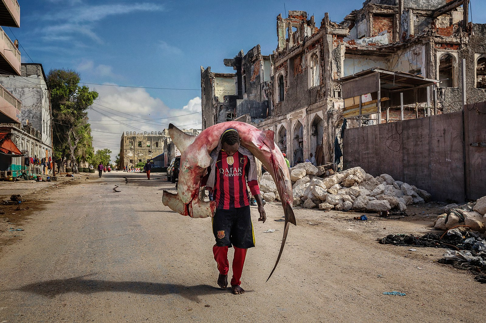

Hammerhead shark
Reproduction occurs only once a year for hammerhead sharks, and usually occurs with the male shark biting the female shark violently until she agrees to mate with him. The hammerhead sharks exhibit a viviparous mode of reproduction with females giving birth to live young. Like other sharks, fertilization is internal, with the male transferring sperm to the female through one of two intromittent organs called claspers. The developing embryos are at first sustained by a yolk sac. When the supply of yolk is exhausted.
Hammerhead sharks are known to eat a large range of prey such as fish (including other sharks), squid, octopus, and crustaceans. Stingrays are a particular favorite. These sharks are often found swimming along the bottom of the ocean, stalking their prey. Their unique heads are used as a weapon when hunting down prey. The hammerhead shark uses its head to pin down stingrays and eats the ray when the ray is weak and in shock.The great hammerhead, tending to be larger and more aggressive than most hammerheads, occasionally engages in cannibalism, eating other hammerhead sharks, including its own young. In addition to the typical animal prey, bonnetheads have been found to feed on seagrass, which sometimes makes up as much as half their stomach contents.
PHOTOS
Relationship with humans

According to the International Shark Attack File, humans have been subject to 17 documented, unprovoked attacks by hammerhead sharks within the genus Sphyrna since 1580 AD. No human fatalities have been recorded.
A man carries a huge hammerhead shark through the streets of Mogadishu, Somalia.
The great and the scalloped hammerheads are listed on the World Conservation Union's (IUCN) 2008 Red List as endangered, whereas the smalleye hammerhead is listed as vulnerable.